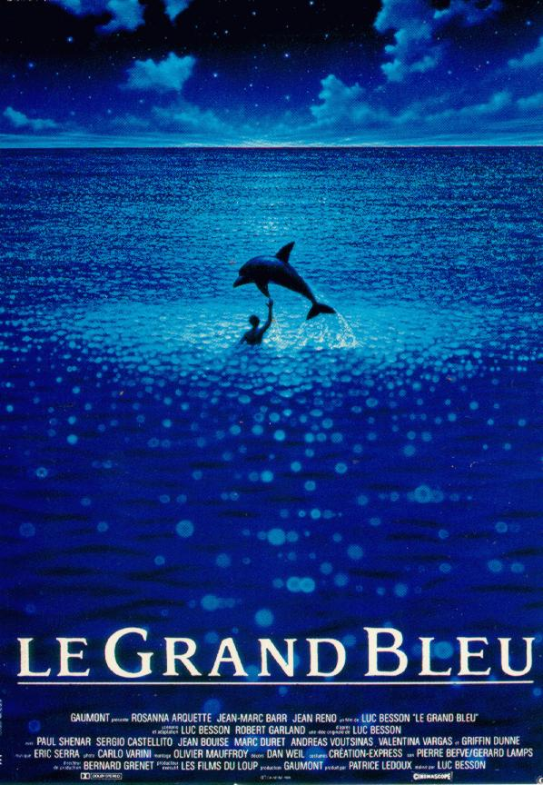
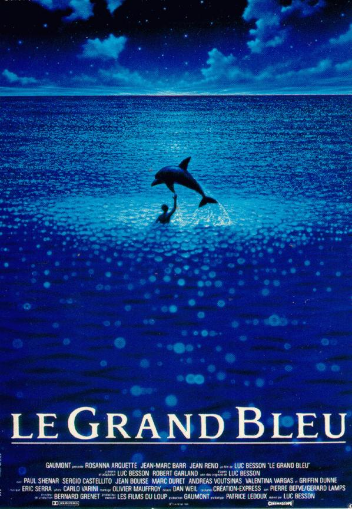

LUC BESSON
Biography

Luc Paul Maurice Besson; born 18 March 1959 is a French filmmaker. He directed or produced the films Subway (1985), The Big Blue (1988), and La Femme Nikita (1990).
Associated with the Cinéma du look film movement, he has been nominated for a César Award for Best Director and Best Picture for his films Léon: The Professional (1994) and The Messenger: The Story of Joan of Arc (1999).

He won Best Director and Best French Director for his sci-fi action film The Fifth Element (1997). He wrote and directed the sci-fi action film Lucy (2014) and the space opera film Valerian and the City of a Thousand Planets (2017).

In 1980, near the beginning of his career, he founded his own production company, Les Films du Loup, later renamed Les Films du Dauphin. It was superseded in 2000 when he co-founded EuropaCorp with longtime collaborator Pierre-Ange Le Pogam.

As writer, director, or producer, Besson has been involved in the creation of more than 50 films.
HI

 


News

Luc Besson's private island in the Bahamas is for sale.
Achievements
The CITÉ DU CINÉMA, designed and created by LUC BESSON, opened its doors in 2012.

The latest, the most ambitious, prestigious and spectacular space dedicated to the cinema industry in France, this magnificent and glamorous site, dreamed of and created by Luc Besson.

Located on the banks of the Seine, has nine state-of-the-art filming studios cinema and among its tenants, a range of companies involved in the cinema, audiovisual and entertainment industry.

It is the French equivalent of Cinecittà, Pinewood or Babelsberg. It was inaugurated on September 21, 2012.
Events
“I’m going to tell you a story. My story. Close-to, without reflection or pretence. With the voice and the thoughts I had as a child. Nothing but the raw truth as I lived it and before it was magnified by time. I haven’t seen that little boy for such a long time – how I would love to see him again. “
Luc BESSON
Photos and Videos
Dogman
~2023~
Lucy
~2014~
Taxi
~1998~
Le Transporteur
~1988~
Le cinquieme element
~1997~
Nikita
~1990~
Le Baiser Mortel du Dragon
~1988~